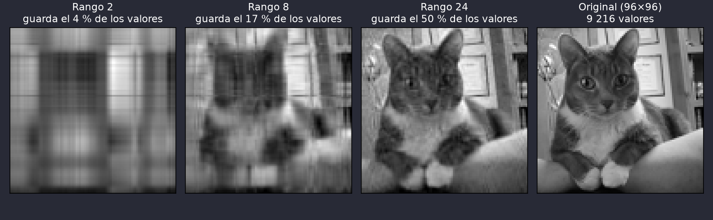
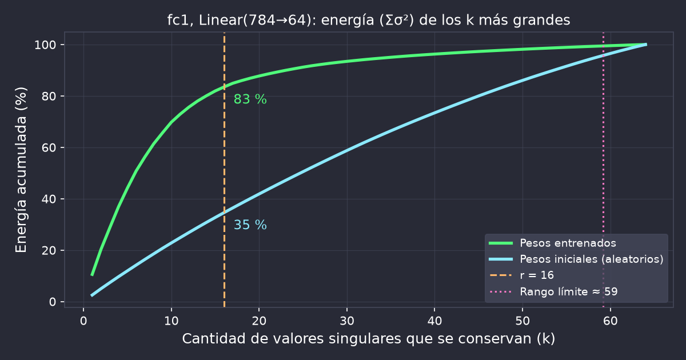
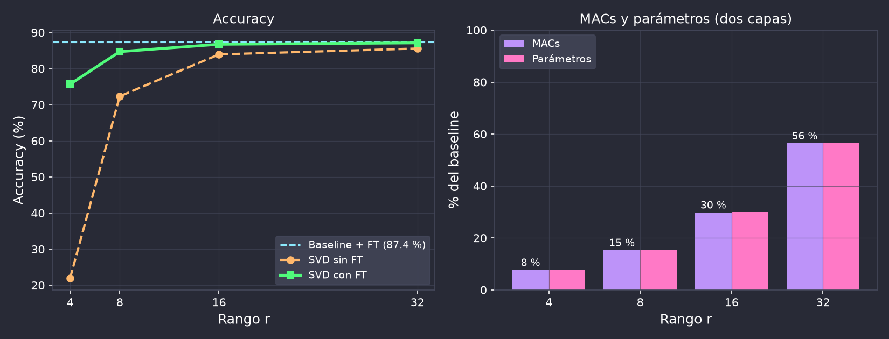
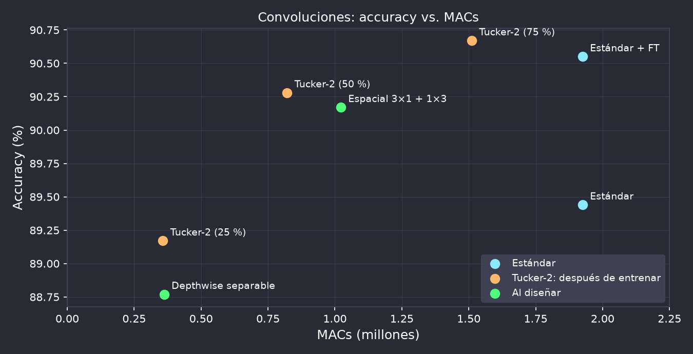

Reemplazar una capa grande por varias más chicas
Una capa densa con n entradas y m salidas es una matriz W (m × n). Si su rango efectivo es bajo, se puede aproximar con dos matrices más chicas:
W(m×n) ≈ U(m×r) · V(r×n), con r ≪ m, n
¿Por qué una matriz entrenada tendría rango bajo? ¿Y esto ahorra solo memoria, o también operaciones?
Toda matriz se descompone como W = U Σ VT: U y V tienen columnas ortonormales
(direcciones) y Σ es diagonal, con los valores singulares ordenados σ1 ≥
σ2 ≥ … ≥ 0.

Reconstruir W y multiplicar
W̃ = U · V, después y = W̃ x
Dos capas encadenadas
y = U (V x): Linear(n→r) y Linear(r→m)
r < m · n / (m + n) (rango límite)
La primera capa del MLP del ejemplo es Linear(784 → 64): 50 176 pesos y 50 176 MACs.
1. Rango límite: 784 · 64 / (784 + 64) = 50 176 / 848 ≈ 59.
2. 16 · (784 + 64) = 13 568 MACs, un 73 % menos.
¿Y la última capa, Linear(16 → 10)? Su límite es ≈ 6: casi no hay nada que ganar.
| Técnica | Qué factoriza | Cuándo | Dónde aparece |
|---|---|---|---|
| SVD truncada | La matriz de una capa densa | Después de entrenar (+ FT) | Capas densas grandes |
| Tucker-2 | Los canales de entrada y de salida de una conv | Después de entrenar (+ FT) | Kim et al., 2016 |
| CP | Todas las dimensiones del kernel | Después de entrenar (+ FT) | Lebedev et al., 2015 |
| Espacial k×1 + 1×k | El kernel en el espacio | Al diseñar (o después) | Inception-v3; Jaderberg et al., 2014 |
| Depthwise separable | Espacio y canales por separado | Al diseñar | MobileNet, EfficientNet |
| LoRA | La actualización ΔW del fine-tuning | Al adaptar un modelo | LLMs |
En el extremo, W ≈ Σ αi · Bi con
Bi ∈ {−1, +1}: una combinación de matrices binarias (ABC-Net). Las redes binarias se ven en
cuantización.
Reemplaza una conv k×k de Cin a Cout canales por dos:
Depthwise k×k
Una conv por canal (groups = Cin): filtra en el espacio, no
mezcla canales.
Pointwise 1×1
Mezcla los canales: Cin → Cout.
| Estándar | H · W · Cout · Cin · k2 MACs |
| Separable | H · W · Cin · (k2 + Cout) MACs → una fracción
1/Cout + 1/k2 |
Ejemplo: 32 → 64 canales, 3×3: 1/64 + 1/9 ≈ 13 % de los MACs.
El kernel equivalente es W[o, i] = P[o, i] · D[i]: rango 1 por canal de entrada.
Extiende la SVD a un kernel 4D: reduce los canales de entrada (Cin → Rin) y de salida (Rout → Cout) con la SVD de cada "desplegado" del tensor (HOSVD), y deja intacto el tamaño del kernel.
W(Cout×Cin×k×k) ≈ G ×₁ Uout ×₂ Uin
La conv k×k cara pasa a trabajar con Rin y Rout canales.
El stride y el padding van en la k×k.
En examples/factorization/, sobre Fashion MNIST:
script01.py: SVD en las capas densas de un MLP
(784→64→32→16→10, el mismo de cuantización), con r = 4, 8, 16 y 32. Unos 2 minutos en CPU.script02.py (avanzado): una CNN de tres convs en cuatro
versiones: estándar, Tucker-2, depthwise separable y espacial 3×1 + 1×3. Unos 9 minutos en CPU;
está pre-corrido.cd examples/factorization && uv run python script01.py, y lo mismo con
script02.py.
Comparación pareja: todos los modelos reciben el mismo entrenamiento (10 épocas) y el mismo fine-tuning (3 épocas). Semilla fija: en la misma máquina dan siempre los mismos números.

fc1, Linear(784 → 64): con 16 de 64 valores singulares, los pesos entrenados juntan el 83.5 % de la energía; los iniciales, el 34.6 %.

Baseline: 86.1 % (87.4 % con el mismo fine-tuning), 53.0 k parámetros y 52.9 k MACs. Con r = 16: 83.9 % sin FT, 86.7 % con FT, y el 30 % de los MACs.
El mismo modelo con r = 16 (misma función, misma accuracy), ejecutado de las dos formas:
| Forma | Pesos guardados | Pesos en RAM | MACs |
|---|---|---|---|
| Dos capas | 62.1 KB | 62.1 KB | 15 776 |
| Reconstruir W | 62.1 KB | 207.1 KB | 52 896 |
Reconstruir solo ahorra almacenamiento: la RAM y los MACs son los del modelo original. En FP32; en int8 los KB se dividen por 4.

CNN: conv(1→16) → conv(16→32) → conv(32→64) → densa(576→10), 29.1 k parámetros y 1.92 M MACs. Se factorizan conv2 y conv3.
| Modelo | Cuándo | Parámetros | MACs | Capas | Acc sin FT | Acc |
|---|---|---|---|---|---|---|
| Estándar + FT | — | 29.1 k | 1.92 M (100 %) | 4 | — | 90.6 % |
| Tucker-2 (25 %) | después de entrenar | 9.1 k | 0.36 M (19 %) | 8 | 81.6 % | 89.2 % |
| Tucker-2 (50 %) | después de entrenar | 15.0 k | 0.82 M (43 %) | 8 | 88.6 % | 90.3 % |
| Tucker-2 (75 %) | después de entrenar | 23.8 k | 1.51 M (78 %) | 8 | 89.2 % | 90.7 % |
| Depthwise separable | al diseñar | 9.0 k | 0.36 M (19 %) | 6 | — | 88.8 % |
| Espacial 3×1 + 1×3 | al diseñar | 17.5 k | 1.02 M (53 %) | 6 | — | 90.2 % |
Sin fine-tuning, el estándar da 89.4 %. Todas las factorizaciones suman capas: de 4 a 6 u 8.
.espdl incluye unos 24 KB de metadatos y bias: tener menos capas
también cuenta.Moraleja, como en cuantización: medir en la plataforma de destino.
Para adaptar un modelo grande a una tarea, LoRA (low-rank adaptation) congela los pesos originales W0 y entrena solo una actualización de rango bajo:
W = W0 + B · A, con B (m × r) y A (r × n), r de 4 a 64
Al diseñar
modelos.py ya trae dos bloques factorizados:
"dws": depthwise separable (dw 3×3 → 1×1)."ir": el bloque invertido de MobileNetV2 (1×1 que expande → dw 3×3 → 1×1 que
proyecta).Después de entrenar
Partir del baseline (ResNet-56) y factorizar sus convs, por ejemplo con Tucker-2, seguido de un fine-tuning.
groups = Cin): la depthwise
está permitida. Otros valores de groups no están soportados.evaluar.py.